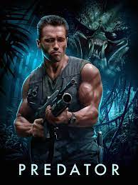

My Top Three Favorite Movies
Number Three

I am a huge fan of science fiction! I've seen several shows and movies but there are three that are at the top of my list. My third favorite film is Predator. I never get tired of watching this film. It starred Arnold Schwarzenegger and was directed by John McTiernan. There have been other spin off films made, but the original one is the best. That's not just my opinion, it's fact!